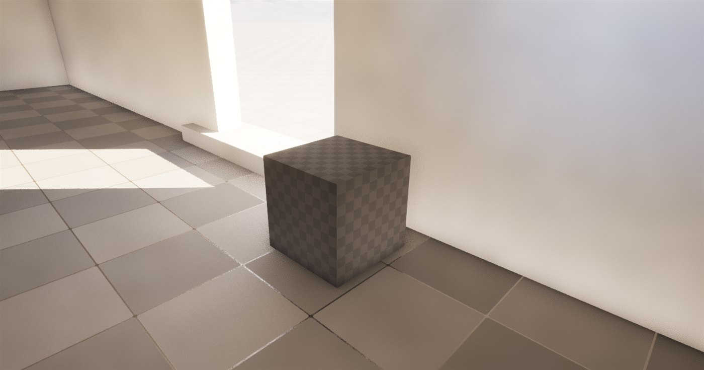
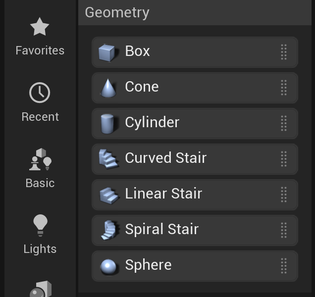

🏗️ Blockout Geometry: Modeling Mode & BSP
Before you reach for external 3D software, Unreal Engine lets you build level geometry directly in the editor. In modern Unreal (UE5), the primary tool for this is Modeling Mode, which shapes real Static Meshes right in the viewport. Its predecessor, BSP (Binary Space Partitioning) geometry, built levels from additive and subtractive "brushes" and is still around for quick tests. This lesson teaches the modern Modeling Mode blockout workflow and shows where the older BSP approach fits.
🎯 Learning Objectives
By the end of this lesson, you will be able to:
- Explain what "blocking out" (greyboxing) is and why it comes first in level design
- Use Modeling Mode to create blockout geometry as real Static Meshes
- Understand additive and subtractive (Boolean) operations and how they shape space
- Recognize BSP / Geometry Brushes as the legacy predecessor and where they still help
- Shape and combine geometry with Modeling Mode tools
- Take blockout geometry through to production-ready Static Meshes
Estimated Time: 45-60 minutes
Prerequisites: Lesson 2.2 - Actors and Components
In This Lesson
Blocking Out Levels in Unreal
Every level starts as a rough draft. Before artists build detailed environments, designers block out the space with simple placeholder geometry to test layout, flow, and pacing. This grey, untextured first pass is also called greyboxing, and it is one of the most important stages of level design.
Unreal lets you block out geometry directly in the editor, with no external software. In modern Unreal (UE5) the tool for this is Modeling Mode, a full set of in-editor modeling tools that produce real Static Meshes. Before Modeling Mode existed, the same job was done with BSP (Binary Space Partitioning) geometry, built from additive and subtractive "brushes." BSP is still in the engine, but it is now a legacy tool.
📖 Two Ways to Build In-Editor
Modeling Mode (modern): UE5's in-editor modeling toolset. You create and shape primitives (boxes, cylinders, stairs, and more) right in the viewport, and the result is saved as a Static Mesh asset. This is the recommended way to block out, and it can even produce simple final geometry.
BSP (legacy): The original level-building system, where geometry is carved from space using additive and subtractive brushes. Still available for a quick throwaway test, but no longer the recommended workflow.
Adding and Subtracting Space
Think of it like working with clay or foam blocks. You either:
- Add material to create solid shapes (walls, floors, pillars)
- Remove material to carve out hollow spaces (rooms, doorways, alcoves)
Modeling Mode does this with mesh Booleans; BSP did it with additive and subtractive brushes. Either way, you are sculpting space itself.
Figure: The core idea shared by both tools · additive volumes create solid geometry (left), subtractive volumes carve out hollow spaces (right).
Why Blockout Comes First
Whichever tool you use, blocking out early pays off:
- Rapid iteration: Simple geometry lets you test the flow and pacing of a level before committing to detailed art.
- No external tools: Everything happens inside Unreal, so there is no export and re-import round trip.
- Greyboxing: Building with plain grey shapes to prove out gameplay is standard practice at every studio.
- Quick edits: Resizing a room or moving a wall takes seconds.
Where BSP Stands in Modern Unreal
It is worth being clear about BSP's status. Epic's own documentation says the role of Geometry Brushes "has been passed on to Static Meshes," and that Geometry Brushes are not recommended as a final method of level design. They remain handy for a quick throwaway test, but Modeling Mode has replaced them as the primary blockout tool because it:
- Produces real Static Meshes that render efficiently and support Nanite (UE5's virtualized geometry)
- Avoids the cracks, Z-fighting, and lightmap problems BSP is prone to
- Keeps you in one workflow from rough blockout to polished mesh
✅ Which Tool, When
Modeling Mode (recommended): Blocking out levels, building simple final geometry, greyboxing, or learning level design. Use it anytime you want a real, reusable mesh.
BSP (legacy): A fast throwaway volume to sanity-check a shape, or maintaining older projects that already use brushes. Not for shipped production geometry.
Additive vs. Subtractive Brushes
Additive and subtractive operations are the foundation of both blockout tools. In Modeling Mode they appear as Boolean operations (Union to add, Subtract to carve); in legacy BSP they are the two brush types, Additive and Subtractive. The terms below use BSP's brush language, but the same add-and-subtract thinking drives Modeling Mode's Booleans.
Additive Brushes
An Additive Brush creates solid geometry—it adds matter to the world. When you place an additive brush, you're saying "this space is now filled with solid material."
📖 Definition
Additive Brush: A volume that creates solid, visible geometry in your level. Additive brushes are the building blocks—walls, floors, ceilings, pillars, and any solid structure.
Think of additive brushes as the LEGO bricks you stack to build structures. Common uses include:
- Walls: Vertical planes that block movement and sight
- Floors: Horizontal surfaces players walk on
- Ceilings: Overhead surfaces that define room boundaries
- Pillars and columns: Vertical supports and decorative elements
- Platforms: Raised areas players can climb onto
When you first place a BSP brush in Unreal, it defaults to Additive. In the editor, additive brushes typically appear with a subtle blue tint (when in Wireframe or BSP mode) to distinguish them from the world.
Subtractive Brushes
A Subtractive Brush does the opposite—it carves out space, removing geometry to create hollow areas. When you place a subtractive brush, you're saying "this space should be empty air."
📖 Definition
Subtractive Brush: A volume that removes geometry, creating hollow spaces. Subtractive brushes carve out rooms, doorways, windows, and any area where you need empty space within solid geometry.
Think of subtractive brushes like a sculptor's chisel—they remove material to reveal the form underneath. Common uses include:
- Rooms: Carving interior spaces from solid blocks
- Doorways: Cutting openings in walls for passage
- Windows: Creating openings for visibility and light
- Alcoves and niches: Indentations in walls for decoration or pickups
- Tunnels and passages: Carving paths through terrain
Subtractive brushes appear with a reddish/pink tint in the editor, making them easy to distinguish from additive brushes.
How They Work Together
The real power of BSP comes from combining additive and subtractive brushes. Here's a typical workflow:
- Start with a large additive brush to create a solid block of geometry
- Use subtractive brushes to carve out rooms and corridors within that block
- Add more additive brushes for internal walls, pillars, or details
- Use additional subtractive brushes for doorways, windows, or decorative cutouts
Figure: The typical BSP workflow - start with additive blocks, carve out interiors with subtractive brushes, then add details.
⚠️ Important Rule
Subtractive brushes can only remove geometry that already exists. They work by "cutting away" from additive brushes. You cannot place a subtractive brush in empty space and expect it to create a void—there needs to be something there to subtract from first.
Brush Order and Priority
When multiple brushes overlap, Unreal processes them in a specific order. Understanding this order helps you predict how your geometry will look:
- Base assumption: The world starts as empty space (void)
- Additive brushes are processed first, creating solid geometry
- Subtractive brushes are processed second, carving away from the additive geometry
- If brushes of the same type overlap, the order they were created matters (later ones take priority)
Think of it like working with layers in Photoshop or painting on a canvas—earlier layers can be covered or modified by later ones.
✅ Pro Tip
If your BSP geometry looks wrong (unexpected holes or solid areas), check the brush types and creation order. You can select a brush and view its properties in the Details panel—there's a "Brush Type" dropdown where you can switch between Additive and Subtractive if needed. You can also use the Order buttons to change the processing priority.
Creating Blockout Geometry with Modeling Mode
Now let's build something. In modern Unreal the fastest way to block out geometry is Modeling Mode: enter the mode, create a box, and shape it into a room. (The legacy BSP route is covered at the end of this section for reference.)
Entering Modeling Mode
Modeling Mode is one of the editor's modes, alongside Selection, Landscape, and Foliage:
- Click the Selection Mode dropdown at the top-left of the main toolbar and choose Modeling (or, with the viewport focused, press Shift+5)
- A column of tool categories appears on the left: Create, Select, XForm, Deform, Model, Mesh, and more
- Click the Create category to reveal the primitive shapes: Box, Sphere, Cylinder, Cone, Torus, Stairs, and others
- When you're finished modeling, switch back to Select mode (Shift+1) to return to normal editing

Figure: Modeling Mode's Create category · the modern in-editor blockout palette (Box, Sphere, Cylinder, Cone, Torus, Stairs, and more). Each shape you create becomes a real Static Mesh.
Building Your First Room
Let's block out a simple room. The workflow is: create a solid box, then carve the interior and a doorway with Boolean subtractions.
Step 1: Create the Shell
- In Create, click Box. Click once in the viewport to drop it, then move the mouse and click again to set its footprint and height (or just click Complete for a default box)
- In the Modeling panel on the left, set exact dimensions: Dimensions X 400, Y 600, Z 300 (centimeters)
- Click Complete (or press Enter). Unreal saves a new Static Mesh asset and drops an instance in your level

Figure: A box created with Modeling Mode's Box tool · unlike a BSP brush, this is a genuine Static Mesh asset the moment you complete it.
💡 Understanding Units
Unreal uses centimeters. A typical room height is 250-300cm (8-10 feet), a door is about 200cm tall and 90cm wide, and an adult character is roughly 180cm tall. Keeping these proportions in mind helps your spaces feel naturally scaled.
Step 2: Carve the Interior
- Create a second, smaller Box inside the first (for example X 340, Y 540, Z 240, which leaves 30cm walls, floor, and ceiling), centered in the shell
- Select both boxes, then in the Model category choose Boolean and set the operation to Subtract (the inner box removes its volume from the shell)
- Click Complete. You now have a hollow room with walls, a floor, and a ceiling
Step 3: Add a Doorway
- Create a small Box sized like a doorway (about X 100, Y 90, Z 200) positioned so it passes through one wall at floor level
- Select the room and the doorway box, run Model → Boolean → Subtract again, and Complete
- The opening is cut clean through the wall
You now have a complete room with an entrance!
Common Modeling Mode Shapes
| Brush Shape | Best Uses | Tips |
|---|---|---|
| Box | Rooms, walls, floors, ceilings, rectangular structures | Most versatile—90% of BSP work uses boxes |
| Cylinder | Pillars, towers, round rooms, tunnels | Adjust "Sides" parameter for smoothness (more sides = rounder) |
| Cone | Roofs, spires, pyramids | Can be used upside-down for funnel shapes |
| Sphere | Domes, spherical rooms, decorative elements | Combine with subtractive to create hollow domes |
| Stairs | Straight, curved, floating, or spiral staircases | The Stairs tool has presets, so you avoid building steps by hand |
| Torus / Extrude | Rings, arches, and pushing faces in or out to shape a mesh | Extrude (in PolyModel) is the workhorse for turning a box into a room |
✅ Pro Tip
Every Modeling Mode shape stays editable. Re-select the mesh, re-enter Modeling Mode, and use tools in Select and PolyModel to move faces, extrude, or bevel. Place, test, adjust, repeat.
Legacy Route: BSP Brushes
For completeness, here is the older BSP workflow. The concepts (additive and subtractive volumes) are identical; only the tool differs. BSP brushes live in the Place Actors panel under the Geometry category:
- Open Window → Place Actors
- Expand the Geometry category to find Box, Cone, Cylinder, Sphere, and Stair brushes
- Drag a brush into the viewport; a brush defaults to Additive, and you switch it to Subtractive in the Details panel to carve
- Because BSP is legacy, prefer Modeling Mode for anything you intend to keep

Figure: The legacy BSP brushes still live under Place Actors → Geometry in 5.8 · useful to recognize, but Modeling Mode is the modern choice.
Shaping and Combining Geometry
Placing a box is just the start. Both Modeling Mode and legacy BSP give you ways to combine volumes and reshape them into rooms, arches, and details. The concepts below apply to both; Modeling Mode is where you'll use them in practice.
CSG Operations
CSG (Constructive Solid Geometry) is the technical term for Boolean operations on solid volumes. Legacy BSP applied them automatically through brush types; in Modeling Mode you invoke them directly with the Boolean tool (Model category), choosing Union, Subtract, or Intersect. Same three operations, either way.
Figure: The three main CSG / Boolean operations. In Modeling Mode you pick them explicitly (Model → Boolean); legacy BSP applied them by brush type.
Modeling Mode Shaping Tools
Once a shape exists, the PolyModel and Model categories let you turn a plain box into real architecture:
- Extrude: Push a selected face in or out. The workhorse for pulling a room out of a wall or raising a platform.
- Inset: Shrink a face inward to create a frame, ledge, or recessed panel.
- Bevel: Round or chamfer edges so corners read as trim rather than hard blocks.
- Boolean: Union, Subtract, or Intersect two meshes (the CSG operations above).
- PolyEd: Full control over individual vertices, edges, and faces when a shape needs hand-tuning.
💡 No Build Step
Modeling Mode edits update the Static Mesh live, so there is nothing to "rebuild." Legacy BSP was different: after changing brushes you had to Build Geometry (Ctrl+Shift+;) for the changes to appear. If you work with old BSP levels, remember that step.
Snapping and Alignment
Precise placement keeps blockouts clean in either tool:
- Grid snapping: The grid button in the viewport toolbar sets the snap increment (common values: 10, 25, 50, 100). Hold Ctrl while dragging to snap.
- Transform typing: Enter exact Location and Dimensions in the Details or Modeling panel for pixel-perfect walls.
- Vertex snapping: Hold V while dragging to snap a mesh to another mesh's vertices, so walls meet cleanly with no gaps.
Good alignment prevents the gaps and seams that plague sloppy blockouts.
Why BSP Became Legacy
Modeling Mode outputs Static Meshes, so it sidesteps the problems that made BSP a legacy tool. It is still worth understanding those limitations, both to know why the field moved on and in case you open an older BSP level.
What BSP Gave Up
In early Unreal Engine versions (UE1, UE2), BSP was the primary way to build levels. Because Modeling Mode produces Static Meshes directly, it wins on every row of the table below, which is exactly why it replaced BSP as the default blockout tool:
| Limitation | Why It Matters | Modern Alternative |
|---|---|---|
| Rendering Performance | BSP geometry is less optimized than Static Meshes. More draw calls, harder for GPU to batch | Use Static Meshes with proper LODs |
| Visual Artifacts | BSP can create cracks, Z-fighting (flickering), and seams—especially at corners and intersections | Static Meshes with proper UVs |
| No Nanite Support | Unreal Engine 5's virtualized geometry (Nanite) doesn't work with BSP, losing massive performance benefits | Convert BSP to Static Mesh, enable Nanite |
| Material Limitations | Each BSP surface can only have one material. Complex texturing requires many brushes | Static Meshes support material slots and complex UVs |
| Collision Complexity | BSP collision is always complex (per-polygon), which is expensive for physics | Static Meshes with simplified collision meshes |
| Build Times | Large amounts of BSP increase level build times, especially for lighting | Static Meshes with Lightmap UVs |
| Organic Shapes | BSP is terrible for curved, organic forms—everything is geometric and blocky | Model complex shapes in Blender/Maya |
| Reusability | Each BSP structure is unique to that level—can't easily reuse across projects | Static Meshes can be assets in a library |
⚠️ Important Performance Note
If you're building a game you plan to ship, avoid using BSP for final geometry. It's fine (and encouraged!) for greyboxing and prototyping, but convert to Static Meshes before optimization passes. AAA studios almost never ship with BSP—it's purely a design tool.
Common BSP Problems
When working with BSP, you'll likely encounter these issues:
1. BSP Holes / Cracks
Thin black lines appearing at brush intersections. Causes: Floating-point precision errors, non-coplanar surfaces, overlapping brushes. Fix: Rebuild geometry, align brushes to grid, ensure surfaces are flush.
2. Z-Fighting
Flickering between two overlapping surfaces. Causes: Two brush faces occupying the same space. Fix: Offset one surface slightly, or merge brushes into one.
3. Invalid Brush
Error message after editing geometry. Causes: Creating non-planar faces, self-intersecting geometry, degenerate triangles. Fix: Undo changes, rebuild from simpler brushes, avoid extreme vertex editing.
4. Lighting Artifacts
Splotchy shadows, light leaks, or black surfaces. Causes: BSP doesn't have explicit lightmap UVs, small surfaces, overlapping geometry. Fix: Increase lightmap resolution, rebuild lighting, convert to Static Mesh with proper UVs.
Figure: Common BSP issues - cracks at seams, Z-fighting flicker, and lighting artifacts.
Best Practices (If You Use Legacy BSP)
If you do work with legacy BSP brushes, these guidelines keep problems to a minimum (with Modeling Mode, most of them simply don't arise):
- Keep it simple: Avoid complex intersecting geometry—use clean, orthogonal shapes
- Align to grid: Always snap brushes to grid (10, 25, 50, 100cm increments)
- Rebuild frequently: Press Ctrl+Shift+; often to catch errors early
- Avoid small details: Don't use BSP for trim, molding, or fine details—use Static Meshes
- Limit brush count: Fewer, larger brushes perform better than many small ones
- Test collision: Add a player character and physically walk through your spaces
- Plan for conversion: Design with the knowledge you'll convert to Static Meshes later
From Blockout to Production
Blockout geometry eventually becomes finished art. How you get there depends on the tool you used. Modeling Mode is already a Static Mesh, so there is nothing to convert , so you refine it in place or hand it to an artist. Legacy BSP must first be converted to a Static Mesh, described below.
Why Convert?
Converting BSP to Static Meshes gives you several advantages:
- ✅ Better performance: Static Meshes render more efficiently
- ✅ Cleaner visuals: No more BSP cracks or Z-fighting
- ✅ Nanite support: Can enable UE5's virtualized geometry for extreme detail
- ✅ Better lighting: Proper lightmap UVs eliminate artifacts
- ✅ Simplified collision: Can create custom, optimized collision meshes
- ✅ Reusability: Converted meshes become assets you can use elsewhere
The Conversion Process
If your blockout is legacy BSP, here is how to convert it to a Static Mesh (Modeling Mode output is already a mesh, so you can skip this):
- Select the BSP brushes you want to convert (you can select multiple)
- Go to Brush → Create Static Mesh in the menu (or right-click and choose "Convert to Static Mesh")
- A dialog will appear asking where to save the new mesh
- Choose a location in your Content Browser (create a "Geometry" folder if needed)
- Name the mesh descriptively (e.g., "SM_Room_Prototype_01")
- Click Create Static Mesh
- The original BSP brushes remain in the level—you can delete them or keep them as reference
- A new Static Mesh Actor is created in the same location with the geometry
Figure: Blockout to production · Modeling Mode meshes skip straight to refinement; legacy BSP adds a convert-to-Static-Mesh step first.
Post-Conversion Steps
After converting to Static Mesh, you'll want to refine the mesh:
- Open the Static Mesh Editor: Double-click the new mesh in Content Browser
- Generate Lightmap UVs: Go to Details → LOD0 → Generate Lightmap UVs (fixes lighting artifacts)
- Create collision: Collision → Add Box/Capsule Simplified Collision (or auto-generate)
- Apply materials: Replace the default BSP material with proper materials
- Set up LODs: For distant viewing, create Level of Detail meshes (optional but recommended)
- Enable Nanite (UE5): In Details, enable "Nanite" for massive performance gains with complex geometry
✅ Pro Workflow Tip
Many professional studios use BSP only in the "pre-production" phase. Once a level layout is proven fun through playtesting, they completely replace BSP with modular Static Mesh sets created by environment artists. The BSP serves as a "blueprint" that artists follow when building the final level. This separation of concerns lets designers and artists work efficiently in parallel.
Alternative: Replace with Modular Assets
Instead of converting BSP directly, you might choose to replace it with modular mesh pieces:
- Keep your BSP as a reference (make it invisible or put in a "Reference" folder)
- Create or obtain modular wall, floor, ceiling, and door pieces
- Place these meshes to match your BSP layout
- Delete the original BSP once replacement is complete
This approach gives you more control over the final look and often results in better visual quality, but takes longer than simply converting.
🏋️ Hands-On Exercise: Block Out a Two-Room Dungeon
Build a small dungeon with two rooms and a connecting corridor using Modeling Mode. You'll create boxes, carve them with Booleans, and end up with real Static Meshes, no conversion required.
Part 1: Enter Modeling Mode and Make the Shell
- Open or create a level, then switch to Modeling Mode (Selection Mode dropdown → Modeling, or Shift+5 with the viewport focused)
- In Create, click Box, drop it in the viewport, and in the Modeling panel set Dimensions to X 1000, Y 800, Z 300
- Click Complete. This solid block is the "mountain" you'll carve rooms from
Part 2: Carve the First Room
- Create another Box (X 400, Y 400, Z 250) positioned in one corner, overlapping the shell
- Select both meshes, then run Model → Boolean → Subtract and Complete
- The inner box's volume is removed, leaving a hollow room
Part 3: Add a Corridor and Second Room
- Create a narrow Box (X 300, Y 150, Z 250) extending from the first room toward the center, then Subtract it
- Create a second room box (X 350, Y 350, Z 250) at the far end of the corridor, overlapping it, and Subtract it
- Both rooms are now joined by the corridor
💡 Hint: Rooms not connecting?
Make sure each subtractive box overlaps the space it should open into before you run the Boolean. If a wall is left between two rooms, add a small doorway box across it and Subtract again.
Part 4: Doorways and a Detail
- Create small boxes (about X 100, Y 90, Z 200) across the remaining walls and Subtract them to cut doorways
- For a pillar, create an Additive-style Cylinder (radius 40, height 250) inside a room; leave it as its own mesh (no Boolean) so it stands as a column
- Try an Extrude (PolyModel) on a ceiling face to raise a vaulted section
Part 5: Test Your Dungeon
- Switch back to Select mode (Shift+1) and place a Player Start inside one room (from the toolbar + Add button, or Place Actors → Basic)
- Press Alt+P to Play in Editor and walk through with WASD and the mouse
- Check for gaps or overlaps, then press Esc to stop
✅ Solution Checkpoint: What should you have?
Your level should contain:
- A solid block with two carved rooms joined by a corridor
- Doorways cut through the walls, plus at least one detail (pillar or vault)
- Real Static Mesh assets in the Content Browser (Modeling Mode saves them automatically, by default under a
_GENERATEDfolder)
Challenge: Go Further
- Second floor: Carve rooms at a higher Z and use the Stairs shape to connect them
- Rounded passages: Subtract a Cylinder to carve a tunnel
- Refine a mesh: Use Bevel on a doorway's edges so the opening reads as a real frame
Because everything is already a Static Mesh, you can drop these blockouts straight into a lit level, enable Nanite, and keep iterating.
Summary
Blocking out geometry in-editor is the first step of level design, and in modern Unreal that means Modeling Mode. Legacy BSP taught the field the additive/subtractive way of thinking, which still underlies today's tools. Let's recap:
Key Takeaways
- 🏗️ Blockout (greyboxing) is the first pass of level design: simple placeholder geometry to test layout and gameplay
- 🔧 Modeling Mode is UE5's modern in-editor blockout tool; every shape you create is a real Static Mesh
- ➕➖ Additive and subtractive (Union / Subtract Booleans) is the shared idea behind both Modeling Mode and legacy BSP
- 🧱 Shaping tools like Extrude, Inset, and Bevel turn a plain box into real architecture
- ⚠️ BSP is legacy: performance issues, visual artifacts, and no Nanite support , and Epic recommends against it for final geometry
- 🔄 Straight to production: Modeling Mode meshes need no conversion; legacy BSP must be converted to a Static Mesh first
- ✅ Best practice: Block out with Modeling Mode, keep shapes simple and grid-aligned, then refine into finished meshes
What's Next?
Now that you can block out geometry with Modeling Mode, the next lesson introduces Lesson 2.4: Static Meshes and Assets. You'll learn how to import 3D models from external software and build levels from modular mesh sets, the backbone of modern level construction.
✅ Self-Check Quiz
Before moving on, make sure you can answer these questions:
- What's the difference between an additive and subtractive brush?
- Why has Modeling Mode replaced BSP as the primary blockout tool in UE5?
- What are the three main CSG operations, and how does Unreal apply them?
- Name three common visual problems with BSP and how to fix them.
- What are the benefits of converting BSP to Static Mesh?
- What's the typical wall thickness for BSP rooms, and why does it matter?
📝 Show Answers
- Additive brushes create solid geometry; subtractive brushes carve out hollow spaces by removing geometry from additive brushes.
- Modeling Mode produces real Static Meshes that render efficiently, support Nanite, and avoid BSP's cracks, Z-fighting, and lightmap problems, all without a separate conversion step.
- Union (combines overlapping geometry), Subtraction (removes volume), and Intersection (keeps only overlapping area). Unreal automatically applies Union for additive brushes and Subtraction for subtractive brushes.
- BSP Cracks (rebuild geometry, align to grid), Z-Fighting (offset overlapping surfaces), Lighting Artifacts (increase lightmap resolution or convert to Static Mesh with proper UVs).
- Better rendering performance, cleaner visuals, Nanite support, proper lightmap UVs, simplified collision, and reusability as library assets.
- Typically 30cm (or 25-50cm depending on scale). This creates realistic wall proportions and provides enough thickness to prevent visual holes or overlapping issues.